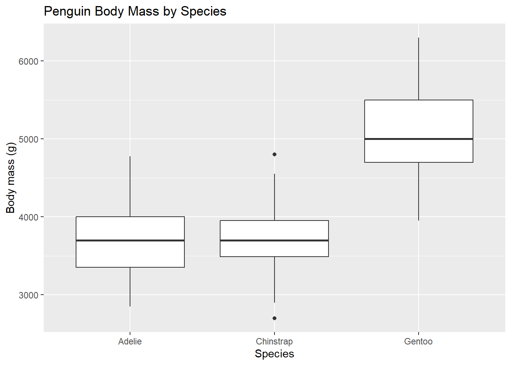
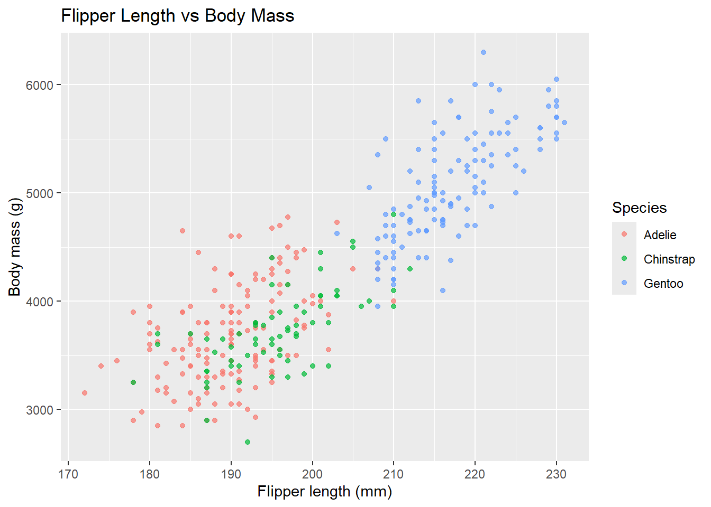

# A tibble: 3 × 3
species mean_body_mass n
<fct> <dbl> <int>
1 Adelie 3701. 151
2 Chinstrap 3733. 68
3 Gentoo 5076. 123
Gentoo penguins have the largest average body mass among the three species in this dataset.
Body mass distribution by species
penguins |>drop_na(species, body_mass_g) |>ggplot(aes(x = species, y = body_mass_g)) +geom_boxplot() +labs(x ="Species",y ="Body mass (g)",title ="Penguin Body Mass by Species" )

Figure 1: Distribution of body mass for each penguin species.
The boxplot shows that Gentoo penguins generally have a higher body mass than Adelie and Chinstrap penguins.
Flipper length and body mass
Next, I explored whether penguins with longer flippers also tend to have greater body mass.
penguins |>drop_na(flipper_length_mm, body_mass_g, species) |>ggplot(aes(x = flipper_length_mm,y = body_mass_g,color = species ) ) +geom_point(alpha =0.7) +labs(x ="Flipper length (mm)",y ="Body mass (g)",color ="Species",title ="Flipper Length vs Body Mass" )

Figure 2: Relationship between flipper length and body mass by species.
The scatter plot shows a positive relationship between flipper length and body mass. Gentoo penguins tend to have both longer flippers and higher body mass than Adelie and Chinstrap penguins.
Average flipper length by species
I also calculated the average flipper length for each species.